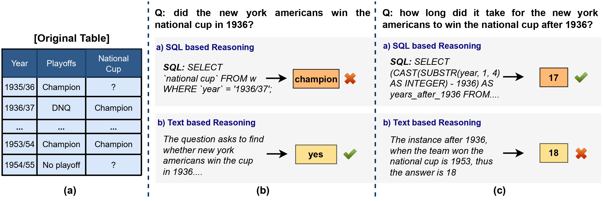
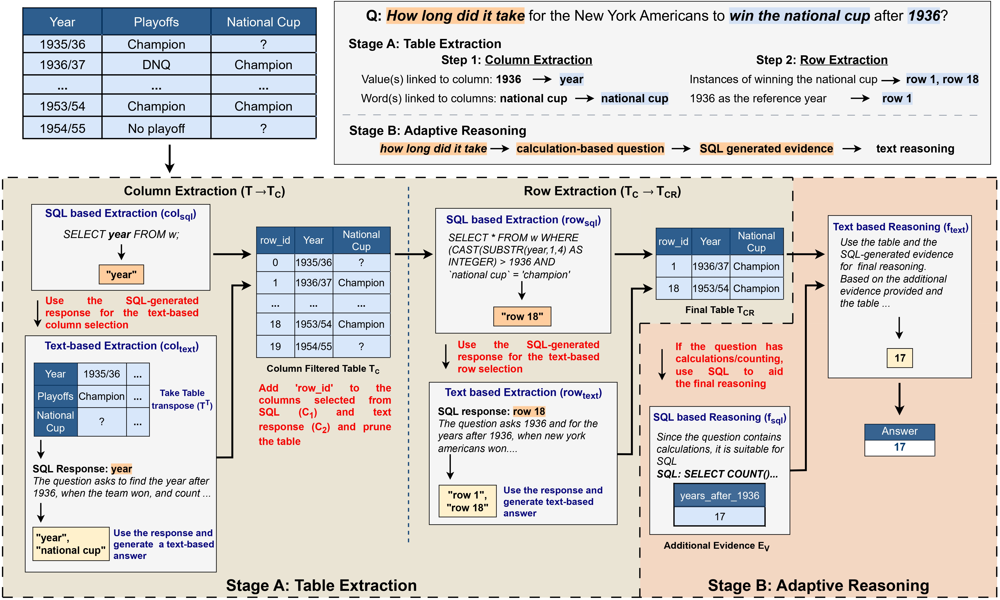

H-STAR: LLM-driven Hybrid SQL-Text Adaptive Reasoning on Tables
About
H-STAR revolutionizes tabular reasoning by combining textual and symbolic approaches for precise and flexible analysis. It first extracts relevant table sections using a ‘multi-view’ column extraction followed by row extraction, then adapts reasoning strategies based on question type—using semantic reasoning for lookups and complex queries while integrating symbolic reasoning for calculations and logic. Extensive evaluations show H-STAR surpasses state-of-the-art methods in tabular QA and fact verification.
The Need for a Hybrid Approach
Existing approaches that rely solely on either semantic/symbolic reasoning often face challenges due to the intricate interplay of numerical, temporal, and textual data, combined with complex table structures. While textual reasoning excels in natural language understanding, it frequently misinterprets table structures and struggles with quantitative reasoning. Conversely, SQL-based approaches are proficient in quantitative problem-solving but falter when handling noisy or unstructured inputs.
H-STAR Overview
H-STAR enhances tabular reasoning through a two-stage process: table extraction and adaptive reasoning. It first employs a multi-view approach to extract relevant table sections, identifying columns from both the original and transposed table. The original table is then filtered to only contain the data from the selected columns before passing on to the row selection. This method ensures precise table extraction minimizing hallucinations. In the second stage, H-STAR dynamically adapts its reasoning based on the question type. It relies on semantic reasoning for lookups, common-sense, and lexical queries, while integrating symbolic (SQL-based) reasoning for mathematical and logical tasks. By combining these strengths, H-STAR surpasses traditional LLM-based text-only and SQL-only methods, achieving more accurate and flexible table-based reasoning.
Results
H-STAR framework outperforms previous state-of-the-art methods on both WikiTQ and TabFact across five Large Language Models!
| GPT-3.5-Turbo | PaLM-2 | |||
|---|---|---|---|---|
| TabFact | WikiTQ | TabFact | WikiTQ | |
| Generic Reasoning | ||||
| End-to-End QA | 70.45 | 51.84 | 77.92 | 60.59 |
| Few-shot QA | 71.54 | 52.56 | 78.06 | 60.33 |
| CoT | 65.37 | 53.48 | 79.05 | 60.43 |
| Table Manipulation | ||||
| BINDER | 79.17 | 56.74 | 76.98 | 54.88 |
| DATER | 78.01 | 52.90 | 84.63 | 61.48 |
| Chain-of-Table | 80.20 | 59.94 | 86.61 | 67.31 |
| TabSQLify | 79.50 | 64.70 | 79.78 | 55.78 |
| H-STAR | 83.74 | 68.85 | 85.92 | 68.51 |
| GPT-4o-mini | Gemini-1.5 | Llama-3 | ||||
|---|---|---|---|---|---|---|
| TF | WTQ | TF | WTQ | TF | WTQ | |
| Generic Reasoning | ||||||
| End-to-End QA | 73.22 | 59.43 | 81.12 | 58.47 | 78.41 | 57.89 |
| CoT | 75.99 | 64.31 | 79.99 | 64.11 | 75.34 | 65.49 |
| Table Manipulation | ||||||
| TabSQLify | 78.30 | 68.74 | 79.50 | 63.92 | 70.00 | 66.85 |
| Chain-of-Table | 85.09 | 68.53 | 86.95 | 65.85 | 80.86 | 70.76 |
| H-STAR | 89.42 | 74.93 | 89.08 | 73.14 | 89.23 | 75.76 |
H-STAR's Efficiency
H-STAR framework reduces the number of table cells efficiently compared to other methods that use table extraction. Furthermore, H-STAR outperforms all baselines on longer tables containing more than 4000 tokens.

| Method | Small | Medium | Large |
|---|---|---|---|
| BINDER | 56.54 | 25.13 | 6.41 |
| DATER | 62.50 | 42.34 | 34.62 |
| Chain-of-Table | 68.13 | 52.25 | 44.87 |
| TabSQLify | 68.15 | 57.91 | 52.34 |
| H-STAR | 71.64 | 65.20 | 64.84 |
Error Analysis
H-STAR excels in table extraction and reasoning, showing fewer errors in column/row extraction and better overall performance compared to TabSQLify and BINDER, with higher reasoning errors reflecting its strong table retrieval.


Acknowledgement
This implementation is based on Binding Language Models in Symbolic Languages. The work has also benefitted from TabSQLify: Enhancing Reasoning Capabilities of LLMs Through Table Decomposition. Thanks to the author for releasing the code.
Citation
Please cite our paper as below.
@article{abhyankar2024h,
title= "H-STAR: LLM-driven Hybrid SQL-Text Adaptive Reasoning on Tables",
author="Abhyankar, Nikhil and
Gupta, Vivek and
Roth, Dan and
Reddy, Chandan K",
journal={arXiv preprint arXiv:2407.05952},
year={2024}
}